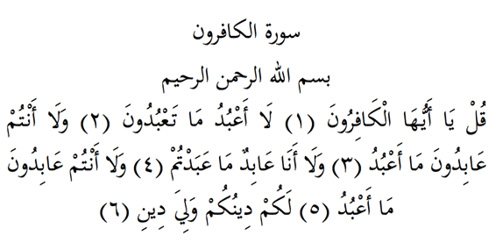

9

Kâfirûn Suresi
Anlamı: Er-Rahman, er-Rahîm Allah’ın adıyla
De ki, ey kâfirler! (1). Ben sizin taptıklarınıza tapmıyorum (2). Siz de benim ibadet ettiğime ibadet etmiyorsunuz (3). Ben sizin taptıklarınıza tapmayacağım da (4) Siz de benim ibadet ettiğime ibadet etmeyeceksiniz (5). Sizin dininiz size benim dinim de bana (6).
Açıklama: Bu sure Mekke’de inen ilk surelerdendir. İniş sırası 18 dir.
Anlatıldığına göre, Mekkeli müşriklerin ileri gelenleri İslam’ın ilk zamanlarında Hz. Peygamber’e bizzat gelerek, ya da bazı yakınlarına ulaşarak bir uzlaşma zemini aramışlar, bazen sen bizim putlarımıza tap, bazen de biz senin Allah’ına ibadet edelim yollu tekliflerde bulunmuşlardı. Sure, bu talepler üzerine inmiştir. Bu sebeple son üç sure gibi «de ki» diye başlar. Sure şirk ile tevhidin tam bir ayrışmasıdır. Bu sebeple bu sure ikinci ihlas suresi olarak bilinir.
«Sizin dininiz size benim dinim de bana» diye çevrilen ayetin anlamı, «siz tapmanızın cezasını görürsünüz, ben de ibadetimin mükâfatını görürüm» diye de anlaşılabilir. Çünkü ‘din’ kelimesi, ceza ve karşılık anlamı da içerir. (Maverdî)
Hz. Peygamber buyurur ki: «el-Kâfirûn suresini okuyan Kuran’ın dörtte birini okumuş gibi olur, azgın şeytanlar ondan kaçar, şirkten kurtulur, büyük korkudan emin olur».
Bazı tefsirciler bu surenin; sanki müşriklere puta tapma serbestisi verdiğine bakarak, kâfirlerle topyekün savaşılmasını emreden ayetlerle nesh edildiğini söylerler, ancak bu doğru değildir. Sure, o günün bir gerçeği olduğu gibi, aynen bu günün de bir gerçeğidir.
Nesh etmek, önce gelen bir ayetin hükmünün, sonra gelenle kaldırılması demektir.